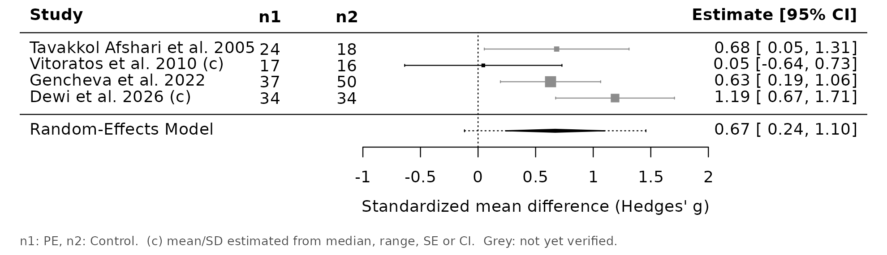
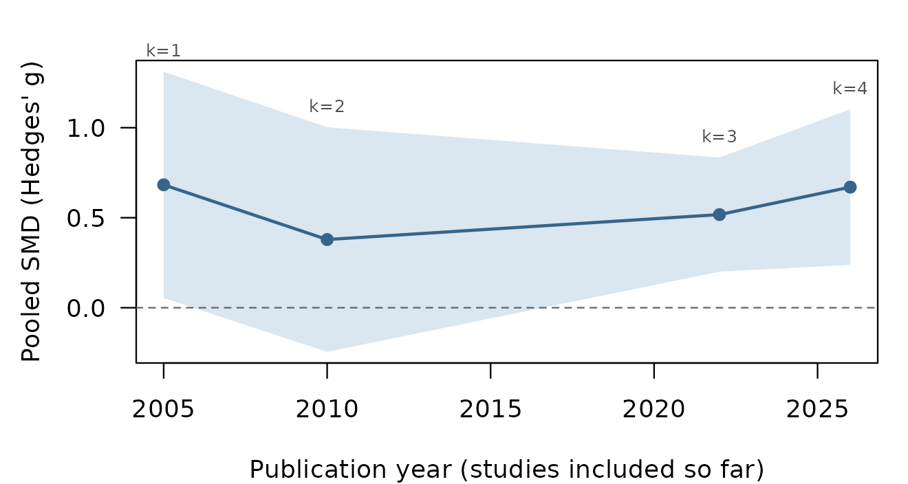
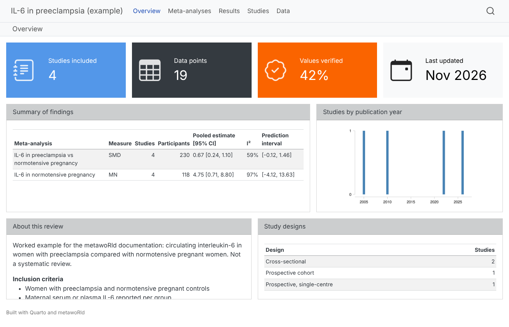
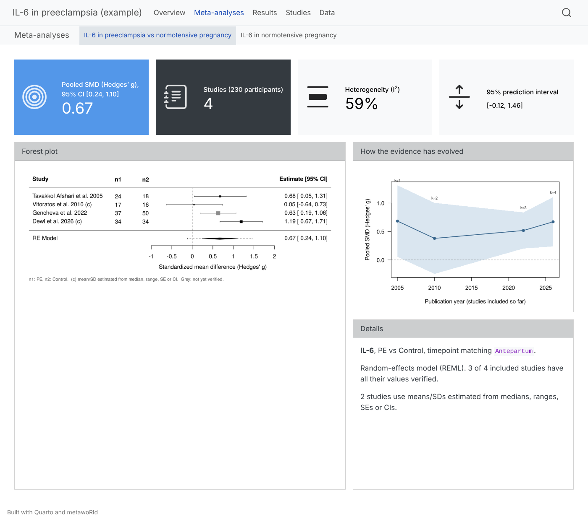

Worked example: IL-6 in preeclampsia
Source:vignettes/articles/worked-example.Rmd
worked-example.RmdThis article walks through a whole metawoRld project on a small, real question: is circulating interleukin-6 (IL-6) higher in women with preeclampsia than in normotensive pregnant women? The data come from four open-access studies. They report IL-6 in four different ways, which is exactly what makes data extraction hard:
| Study | Country | Sample | IL-6 reported as |
|---|---|---|---|
| Tavakkol Afshari et al. 2005, BMC Pregnancy Childbirth | Iran | serum, ELISA | mean (SD) |
| Vitoratos et al. 2010, Mediators Inflamm | Greece | plasma, ELISA | mean ± SE, at diagnosis and 12–14 weeks postpartum |
| Gencheva et al. 2022, Cardiovasc J Afr | Bulgaria | serum, ELISA | mean ± SD; also a gestational-hypertension group and early/late-onset subgroups |
| Dewi et al. 2026, Narra J | Indonesia | serum, ECLIA | median (min–max) |
This is a documentation example, not a systematic review: the studies
were chosen to show the package, not found by a systematic search. The
values were transcribed from the articles and each carries its location
in the paper; the people are example personas. The data files are in
system.file("extdata", "il6-preeclampsia", package = "metawoRld"),
and example_project() builds the same project in one
call.
library(metawoRld)
src <- system.file("extdata", "il6-preeclampsia", package = "metawoRld")
extraction <- function(file) yaml::read_yaml(file.path(src, "extractions", paste0(file, ".yml")))1. Set up the project
path <- file.path(tempdir(), "il6-preeclampsia")
create_metawoRld(
path,
project_name = "IL-6 in preeclampsia (example)",
project_description = "Circulating interleukin-6 in preeclampsia vs normotensive pregnancy.",
inclusion_criteria = c("Women with preeclampsia and normotensive pregnant controls",
"Maternal serum or plasma IL-6 reported per group"),
exclusion_criteria = c("Other hypertensive disorders only (e.g. HELLP syndrome)",
"Group sizes or IL-6 values not reported"),
git_init = FALSE
)
#> Created metawoRld project at /tmp/RtmpyG51Pm/il6-preeclampsiaEveryone who screens, extracts or verifies is registered once. Every decision and every value is later traced back to one of these ids.
add_person(path, "ext1", "Example extractor 1", roles = c("screener", "extractor", "verifier"))
add_person(path, "ext2", "Example extractor 2", roles = c("screener", "extractor", "verifier"))
add_person(path, "arb", "Example arbiter", roles = c("admin", "arbiter", "verifier"))What is extracted is defined by forms/extraction.yml
(generic by default). The vocabulary in _rules.yml maps the
names used in papers to canonical names and groups to categories;
_analyses.yml lists the planned meta-analyses.
rules <- read_rules(path)
rules$variables <- list(
`IL-6` = list(synonyms = list("Interleukin-6", "IL6"), unit = "pg/mL"),
`Maternal age` = list(unit = "years"),
`Gestational age at sampling` = list(unit = "weeks")
)
rules$group_categories <- list(
PE = list(synonyms = list("Preeclampsia", "Pre-eclampsia")),
Control = list(synonyms = list("Normal pregnant", "Normotensive controls",
"Healthy pregnant controls", "Normotensive pregnancy")),
GH = list(synonyms = list("Gestational hypertension"))
)
metawoRld:::.write_rules(file.path(path, "_rules.yml"), rules)
writeLines(c(
"analyses:",
" - name: IL-6 in preeclampsia vs normotensive pregnancy",
" variable: IL-6",
" measure: SMD",
" compare: [PE, Control]",
" timepoint: Antepartum"
), file.path(path, "_analyses.yml"))2. Search log and screening
Searches and records are logged in the project, so the PRISMA counts can be computed from the files alone.
add_search(path, "example-2026-11", "PubMed and journal websites",
"interleukin-6 AND (preeclampsia OR pre-eclampsia), open-access full texts",
results = 6, person = "arb", date = as.Date("2026-11-13"))
records <- read.csv(file.path(src, "records.csv"), colClasses = "character")
rid <- add_records(path, records, search = "example-2026-11")$record_id
read_records(path)[, c("record_id", "year", "journal")]
#> # A tibble: 6 × 3
#> record_id year journal
#> <chr> <chr> <chr>
#> 1 10.1186/1471-2393-5-14 2005 BMC Pregnancy and Childbirth
#> 2 10.1155/2010/908649 2010 Mediators of Inflammation
#> 3 rec-8cc42da542f2 2022 Cardiovascular Journal of Africa
#> 4 10.52225/narra.v6i1.3016 2026 Narra J
#> 5 10.30659/sainsmed.v9i2.3630 2018 Sains Medika
#> 6 rec-007cefffa04d 2021 Journal of the Pakistan Medical AssociationTwo people screen titles and abstracts independently. They disagree
on the HELLP-syndrome study, so screening_status() reports
a conflict until the arbiter records a consensus decision.
add_screening(path, rid, "title_abstract",
c("include", "include", "include", "include", "exclude", "include"),
c("", "", "", "", "HELLP syndrome, not preeclampsia", ""), person = "ext1")
add_screening(path, rid, "title_abstract", rep("include", 6), person = "ext2")
screening_status(path)[, c("record_id", "outcome", "n_decisions")]
#> # A tibble: 6 × 3
#> record_id outcome n_decisions
#> <chr> <chr> <int>
#> 1 10.1155/2010/908649 include 2
#> 2 10.1186/1471-2393-5-14 include 2
#> 3 10.30659/sainsmed.v9i2.3630 conflict 2
#> 4 10.52225/narra.v6i1.3016 include 2
#> 5 rec-007cefffa04d include 2
#> 6 rec-8cc42da542f2 include 2
add_screening(path, rid[5], "title_abstract", "exclude", "HELLP syndrome, not preeclampsia",
person = "arb", kind = "consensus")
add_screening(path, rid[-5], "full_text", c("include", "include", "include", "include", "exclude"),
c("", "", "", "", "Group sizes not reported"), person = "arb")3. Submit through the one door
Every channel (the entry form, a CSV file, DataFindR, a script) hands
its extraction to submit_study(). It is checked against the
form and staged in submissions/; nothing reaches
data/ yet.
e <- extraction("afshari2005")
e$data_points[[1]][c("variable_name", "group_id", "statistic_type", "value1", "value2", "source")]
#> $variable_name
#> [1] "IL-6"
#>
#> $group_id
#> [1] "g1"
#>
#> $statistic_type
#> [1] "mean_sd"
#>
#> $value1
#> [1] 5.8
#>
#> $value2
#> [1] 4.85
#>
#> $source
#> [1] "Abstract (p. 1); Results (p. 2-3)"
id <- submit_study(path, "afshari2005", e$metadata, e$data_points, person = "ext1",
channel = "entry_form")
#> Submitted afshari2005 (20261113T070558-ext1-extraction): 6 data point(s).Invalid data are refused with every problem listed, and nothing is written:
bad <- e
bad$data_points[[1]]$group_id <- "g3" # a group the study does not have
bad$data_points[[2]]$statistic_type <- "mean (SD)"
submit_study(path, "afshari2005", bad$metadata, bad$data_points, person = "ext1")
#> Error in `.abort_validation()`:
#> ! Validation failed for study 'afshari2005' (2 problem(s)):
#> ✖ data_points[2].statistic_type: 'mean (SD)' is not one of [mean_sd, mean_se, mean_ci95, median_iqr, median_range, n_percent, count, proportion, geometric_mean_sd, other].
#> ✖ data_points.group_id: value(s) 'g3' not defined in metadata.groups[].group_id (defined: g1, g2)A person accepts the submission. The values move to
data/afshari2005/ with a record of where each one came
from:
accept_submission(path, "afshari2005", id, person = "arb")
#> Accepted 20261113T070558-ext1-extraction into data/afshari2005.
read_study(path, "afshari2005")$provenance[, c("measurement_id", "person", "channel", "timestamp")]
#> # A tibble: 7 × 4
#> measurement_id person channel timestamp
#> <chr> <chr> <chr> <chr>
#> 1 _metadata ext1 entry_form 2026-11-13T07:05:58Z
#> 2 dp1 ext1 entry_form 2026-11-13T07:05:58Z
#> 3 dp2 ext1 entry_form 2026-11-13T07:05:58Z
#> 4 dp3 ext1 entry_form 2026-11-13T07:05:58Z
#> 5 dp4 ext1 entry_form 2026-11-13T07:05:58Z
#> 6 dp5 ext1 entry_form 2026-11-13T07:05:58Z
#> 7 dp6 ext1 entry_form 2026-11-13T07:05:58Z
for (s in c("gencheva2022", "dewi2026")) {
e <- extraction(s)
id <- submit_study(path, s, e$metadata, e$data_points, person = "ext1", channel = "entry_form")
accept_submission(path, s, id, person = "arb")
}
#> Submitted gencheva2022 (20261113T070558-ext1-extraction): 5 data point(s).
#> Accepted 20261113T070558-ext1-extraction into data/gencheva2022.
#> Submitted dewi2026 (20261113T070558-ext1-extraction): 4 data point(s).
#> Accepted 20261113T070558-ext1-extraction into data/dewi2026.
link_record(path, rid[3], "gencheva2022") # this report has no DOI/PMID to match on4. Dual extraction finds a real reporting problem
Two people extracted Vitoratos et al. (2010) independently. The paper
is inconsistent: Table 2 and the Methods give IL-6 as mean ± SE, but the
Results text calls the postpartum values mean ± SD. Extractor 1 followed
the table, extractor 2 the text. compare_extractions()
lines up the data points by variable, group, method, time point and
statistic, so the antepartum values agree and the postpartum values do
not:
e1 <- extraction("vitoratos2010-ext1")
e2 <- extraction("vitoratos2010-ext2")
s1 <- submit_study(path, "vitoratos2010", e1$metadata, e1$data_points, person = "ext1",
channel = "entry_form")
#> Submitted vitoratos2010 (20261113T070558-ext1-extraction): 4 data point(s).
s2 <- submit_study(path, "vitoratos2010", e2$metadata, e2$data_points, person = "ext2",
channel = "csv_import")
#> Submitted vitoratos2010 (20261113T070558-ext2-extraction): 4 data point(s).
cmp <- compare_extractions(path, "vitoratos2010", c(s1, s2))
names(cmp)[4:5] <- c("ext1", "ext2")
table(agree = cmp$agree, part = cmp$part)
#> part
#> agree data metadata
#> FALSE 16 1
#> TRUE 8 20The disagreements, one line per data point (the values of each data
point follow in further rows of cmp):
d <- cmp[!cmp$agree & cmp$field %in% c("(row)", "notes"), c("part", "key", "field", "ext1", "ext2")]
d$ext1 <- ifelse(nchar(d$ext1) > 40, paste0(substr(d$ext1, 1, 37), "..."), d$ext1)
knitr::kable(d, row.names = FALSE)| part | key | field | ext1 | ext2 |
|---|---|---|---|---|
| metadata | notes | notes | Table 2 and the Methods give IL-6 as … | NA |
| data | IL-6 | g1 | m1 | 12-14 weeks postpartum | mean_se | (row) | present | NA |
| data | IL-6 | g2 | m1 | 12-14 weeks postpartum | mean_se | (row) | present | NA |
| data | IL-6 | g1 | m1 | 12-14 weeks postpartum | mean_sd | (row) | NA | present |
| data | IL-6 | g2 | m1 | 12-14 weeks postpartum | mean_sd | (row) | NA | present |
The arbiter checks the paper and keeps the table’s mean ± SE (it
agrees with the Methods). reconcile() records the
decision:
dis <- cmp[!cmp$agree, ]
rows <- unique(dis$key[dis$part == "data"])
choices <- data.frame(
part = c("metadata", rep("data", length(rows))),
key = c("notes", rows),
field = c("notes", rep("(row)", length(rows))),
from = c(s1, ifelse(grepl("mean_se", rows), s1, NA)),
value = c(NA, ifelse(grepl("mean_se", rows), NA, "drop"))
)
reconcile(path, "vitoratos2010", c(s1, s2), choices = choices, person = "arb")
#> Reconciled 2 extractions into data/vitoratos2010 (17 disagreement(s), 5 choice(s)).provenance.csv now shows, for every value, which
extraction it came from and which other extraction agreed with it: both
extractors agreed on the antepartum values, only extractor 1 on the
postpartum ones.
pr <- read_study(path, "vitoratos2010")$provenance
pr$agreed <- nzchar(pr$agreed_with)
pr[, c("measurement_id", "person", "channel", "agreed")]
#> # A tibble: 5 × 4
#> measurement_id person channel agreed
#> <chr> <chr> <chr> <lgl>
#> 1 _metadata ext1 entry_form FALSE
#> 2 dp1 ext1 entry_form TRUE
#> 3 dp2 ext1 entry_form TRUE
#> 4 dp3 ext1 entry_form FALSE
#> 5 dp4 ext1 entry_form FALSE5. Verify values against the papers
review_values() opens a Shiny app that shows each value
in plain language, with its flags and source, next to the full text at
the right page. V verifies, R rejects,
N/P move through the queue. A verification is
tied to a hash of the values, so a value that changes later returns to
the queue.
The same decisions can be recorded from R:
set_verification(path, "vitoratos2010", c("dp1", "dp2", "dp3", "dp4"), reviewer = "arb",
note = "Checked against Table 2 (mean +/- SE).")
table(verification_status(path)$status)
#>
#> unverified verified
#> 15 46. Check the project
check_project() checks forms, schemas, links,
provenance, people, records and screening, and recomputes the file
hashes in each study’s datapackage.json. It is the command
to run in continuous integration
(use_github_action_check()).
check_project(path)
#> check_project(): 4 study(ies), 0 error(s), 0 warning(s).
prisma_counts(path)
#> # A tibble: 10 × 2
#> stage n
#> <chr> <int>
#> 1 "Records identified" 6
#> 2 "Duplicates removed" 0
#> 3 "Records screened (title/abstract)" 6
#> 4 "Records excluded (title/abstract)" 1
#> 5 "Awaiting decision (title/abstract)" 0
#> 6 "Reports assessed (full text)" 5
#> 7 "Reports excluded (full text)" 1
#> 8 " Excluded: Group sizes not reported" 1
#> 9 "Studies included" 4
#> 10 "Reports of included studies" 4A value edited by hand, outside metawoRld, is caught:
f <- file.path(path, "data", "dewi2026", "data.csv")
x <- readLines(f); x[2] <- sub("16.05", "61.05", x[2], fixed = TRUE); writeLines(x, f)
check_project(path)$message
#> x data/dewi2026: data.csv changed outside metawoRld (hash differs from datapackage.json).
#> check_project(): 4 study(ies), 1 error(s), 0 warning(s).
#> [1] "data.csv changed outside metawoRld (hash differs from datapackage.json)."7. Living meta-analysis
Medians with ranges and SEs are converted to means and SDs (Wan et
al. 2014), group names are mapped to the categories in
_rules.yml, and only antepartum values are used, as
_analyses.yml asks.
ma <- run_meta_analysis(path, read_analyses(path)[[1]])
ma$summary[, c("studies", "participants", "estimate", "I2", "prediction_interval")]
#> # A tibble: 1 × 5
#> studies participants estimate I2 prediction_interval
#> <int> <dbl> <chr> <chr> <chr>
#> 1 4 230 0.67 [0.24, 1.10] 59% [-0.12, 1.46]
plot_forest(ma)
The cumulative meta-analysis shows how the pooled estimate evolved as studies were published, the essence of a living review:
plot_cumulative(ma)
With four small, heterogeneous studies, the estimate is uncertain (the prediction interval includes zero), as it should be for an example this size.
8. The dashboard
generate_website() builds a Quarto dashboard that is
rebuilt on every change (use_github_action_quarto()
publishes it on GitHub Pages):


In one call
p <- example_project(file.path(tempdir(), "il6"))
review_values(p)
generate_website(p)Sources
- Tavakkol Afshari J, Ghomian N, Shameli A, et al. Determination of interleukin-6 and tumor necrosis factor-alpha concentrations in Iranian-Khorasanian patients with preeclampsia. BMC Pregnancy Childbirth 2005;5:14. https://doi.org/10.1186/1471-2393-5-14
- Vitoratos N, Economou E, Iavazzo C, et al. Maternal serum levels of TNF-alpha and IL-6 long after delivery in preeclamptic and normotensive pregnant women. Mediators Inflamm 2010;2010:908649. https://doi.org/10.1155/2010/908649
- Gencheva D, Nikolov F, Uchikova E, et al. Interleukin-6 and its correlations with maternal characteristics and echocardiographic parameters in pre-eclampsia, gestational hypertension and normotensive pregnancy. Cardiovasc J Afr 2022;33(2):65–73. https://pmc.ncbi.nlm.nih.gov/articles/PMC9364472
- Dewi SR, Yeni CM, Munizar M, et al. Comparison of interleukin-6 and serum creatinine levels in preeclampsia and normal pregnancy patients: a cross-sectional study in Indonesia. Narra J 2026;6(1):e3016. https://doi.org/10.52225/narra.v6i1.3016
- Wan X, Wang W, Liu J, Tong T. Estimating the sample mean and standard deviation from the sample size, median, range and/or interquartile range. BMC Med Res Methodol 2014;14:135. https://doi.org/10.1186/1471-2288-14-135